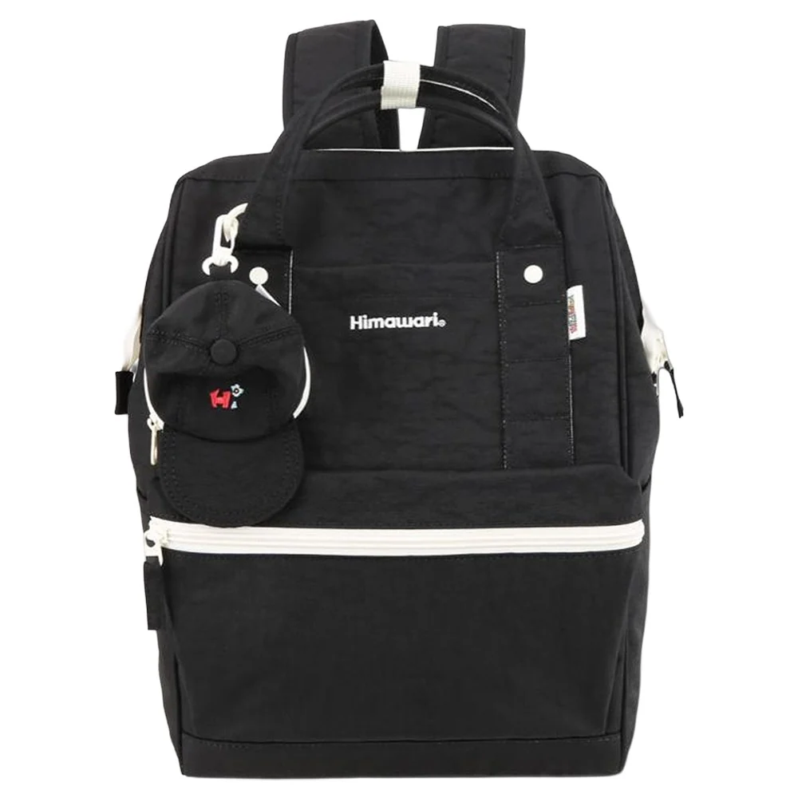

겨울 코트 위에 멜 백팩은 어떤 옆모습일까
검정 백팩이 마음에 들었는데 두꺼운 코트 위에 메어보니 정면 사진에서 생각한 모습과 다를 수 있습니다. 몸체의 색은 같아도 옆에서 보이는 두께와 등에 놓인 위치가 달라지기 때문입니다. 겨울용 가방을 따로 고르거나 사계절 쓸 백팩을 찾는다면 코트를 입은 날의 옆모습도 비교해봅니다. 등 쪽의 큰 검정 면을 남기고 싶은지, 외투 위에서 덜 도드라지는 크기를 원하는지에 따라 질문이 달라집니다.
백팩 정면만 보면 가로와 세로가 먼저 눈에 들어옵니다. 등에 메면 앞뒤 깊이가 몸에서 바깥으로 이어지고, 그 사이에는 코트의 등판과 옷깃이 있습니다. 같은 외부 크기의 백팩도 옷과 짐이 달라진 상태에서는 다른 인상으로 보일 수 있습니다. 겨울 비교에서는 평소 사용하는 짐과 자주 입는 코트를 함께 준비하면 바꿀 조건을 좁히기 쉽습니다. 새 가방을 비워 멘 모습만으로 겨울의 실루엣을 정하지 않습니다.

검정 몸체에서 밝게 남는 선
Himawari No.9007 블랙의 실제 제품 사진에는 검정 몸체와 앞쪽을 가로지르는 밝은 선이 보입니다. 위쪽의 밝은 손잡이와 둥근 장식도 짙은 면 안에서 구별됩니다. 검정이라는 한 색 이름 안에도 이렇게 밝기가 다른 부분이 놓입니다. 어두운 코트에 멨을 때 몸체가 가깝게 이어지는 구성을 원하더라도 이 선과 장식이 어느 정도 드러나길 바라는지 살펴볼 수 있습니다.
외부 크기는 가로 28 × 세로 40 × 폭 17cm로 안내되어 있습니다. 이 숫자는 바깥 규모를 비교하는 자료이며 특정 코트를 입은 사람의 착용 결과를 정해주는 값은 아닙니다. 겨울 옆모습을 볼 때에는 특히 앞뒤 폭을 정면 크기와 함께 읽습니다. 가로가 마음에 들고 세로도 익숙하더라도 옆에서 튀어나온 면이 기대와 다르면 다른 깊이의 후보를 비교할 이유가 생깁니다.
검정 코트와 이 백팩을 함께 보면 밝은 가로선이 가방의 너비를 표시하는 것처럼 느껴질 수 있습니다. 밝은 코트에서는 검정 몸체의 전체 윤곽이 더 먼저 보일 수도 있습니다. 넓은 몸체가 이어지는 조합을 좋아하는지, 작은 밝은 선이 남는 쪽을 좋아하는지 자신의 옷에서 고르면 됩니다. 제품을 단독으로 볼 때와 외투 위에 놓인 상태에서 좋아하는 부분이 다른지도 살펴봅니다.
옆에서 볼 깊이는 짐을 넣은 상태로
겨울에 자주 담는 머플러나 여분 옷이 있다면 평소 넣는 모습으로 비교합니다. 겉으로 보이는 가방 깊이가 실제 짐에 영향을 받기 때문입니다. 사진을 찍기 위해 부드러운 짐을 빼면 정돈된 옆선이 남을 수 있지만, 매일 사용하는 상태와의 차이를 놓치게 됩니다. 같은 물건을 두 후보에 담아보면 몸체가 부푸는 위치와 입구가 닫힌 모양을 각각 볼 수 있습니다.
비교는 코트의 옆선과 백팩의 옆선을 한 화면에 두는 정도로 시작할 수 있습니다. 가방 아랫부분이 어디에 오고 가장 튀어나온 면이 어느 높이에 놓이는지 봅니다. 긴 코트 위에서는 백팩 아래로 남는 외투 면적을 볼 수 있고, 짧은 외투에서는 가방과 옷의 끝이 가까이 오는지를 볼 수 있습니다. 두 옷을 자주 입는다면 각각의 옆모습을 남겨 선호를 비교합니다. 마음에 든 조합이라면 실제 필요한 짐도 같은 상태로 놓이는지가 이어지는 조건입니다.
가방의 깊이를 줄이는 후보를 찾았다면 줄어든 공간이 일상 짐과 맞는지 확인합니다. 더 납작한 옆모습을 만들려고 필수품을 계속 다른 봉투에 옮기게 된다면 손에 드는 물건이 늘 수 있습니다. 외형을 위해 어느 정도 운반 방식을 바꿀지 정하는 선택입니다. 반대로 겨울에는 부피 있는 짐이 자주 생겨 넉넉한 몸체를 택할 수도 있습니다. 두 선택에는 각기 받아들일 동작이 있습니다.
외투를 벗은 뒤에도 이어지는 디자인
실내에 들어가 외투를 벗고 백팩을 다시 메면 같은 가방이 얇은 옷 위에 놓입니다. 겨울 한 장면에서 마음에 들었던 크기가 그 상태에서도 편하게 쓰이는지 봅니다. 계절용으로 따로 고르는 가방이라면 코트와의 조합에 더 비중을 둘 수 있고, 사계절 사용할 계획이라면 자주 입는 다른 겉옷도 비교의 한쪽에 남깁니다.
옷 두께가 바뀌며 어깨끈을 조정할 필요가 있다면 해당 제품의 안내 안에서 맞춥니다. 현재 가방과 옷을 정상적으로 사용한 상태에서 실루엣을 비교할 수 있도록 맞춥니다. 끈을 지나치게 당겨 원하는 사진의 위치만 만들기보다 가방을 메고 벗는 동작이 이어지는지 함께 봅니다. 외형 취향과 사용 조건을 같은 자리에서 고르는 것입니다.
온라인 착용 사진에서는 인물의 자세와 외투 두께도 함께 읽습니다. 사진 속 코트가 내 코트와 다른 두께라면 그 모습은 가방 디자인의 참고로 남길 수 있습니다. 자신의 등에서 같은 위치가 될 것이라고 바로 옮겨 생각하기보다 외부 치수와 다른 방향의 사진을 연결합니다. 보관된 AI 연출 사진은 가방과 코트가 함께 놓인 분위기를 읽는 참고로 볼 수 있습니다.
겨울에 쓸 백팩 후보를 남길 때에는 색상명 옆에 원하는 옆모습을 짧게 적어봅니다. 몸체의 높이는 그대로 두고 앞뒤 깊이가 덜한 후보를 보고 싶은지, 넉넉한 깊이와 밝은 선이 드러나는 현재 조합을 좋아하는지 말할 수 있습니다. 코트 선택은 옷의 질문으로 두고, 가방 선택에서는 짐을 넣은 깊이와 외투 위의 윤곽을 읽습니다. 다음 비교에서 어느 각도로 가방을 보고 싶은지도 자연스럽게 정해집니다.